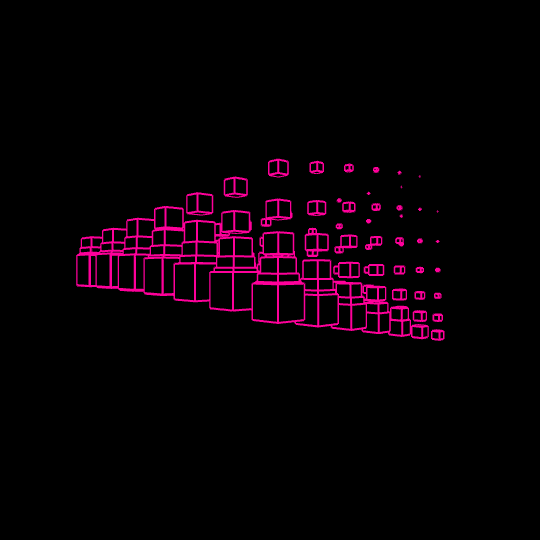
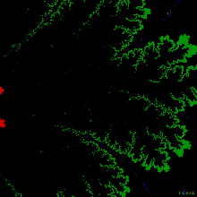
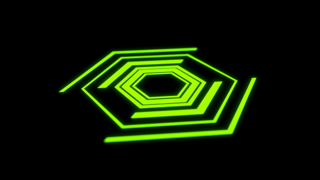
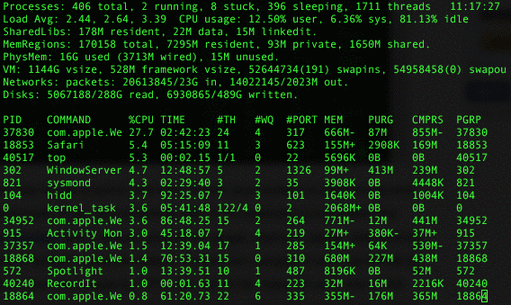

I would describe myself as innocent but you can try me.
I am a really awesome creature. Every day I wake up, munch on some grass, do some coding, and then go back to sleep.

You can find me on:
Or, you can send me an email.

These are some of the links for exams:
|
Sociological Theories |
Sociology of Religion |
Indian Sociology | Sociology of Kinship |
| Early Sociology | Approach to study religion | Kinship, Marriage, And Family | |
| Max Weber | Perspective on Religion | FAMILY AND ITS TYPES | |
| Emile Durkheim | Brahmanical Perspectives | ||
| Karl Marx | Nuer Religion | ||
| Secularization | Ambedkar and Lohia on Caste | ||
| Rituals |
Assignments for the University

© Copyright href="mailto:codeaalok@outlook.com" Mishra, Aalok 2023 y